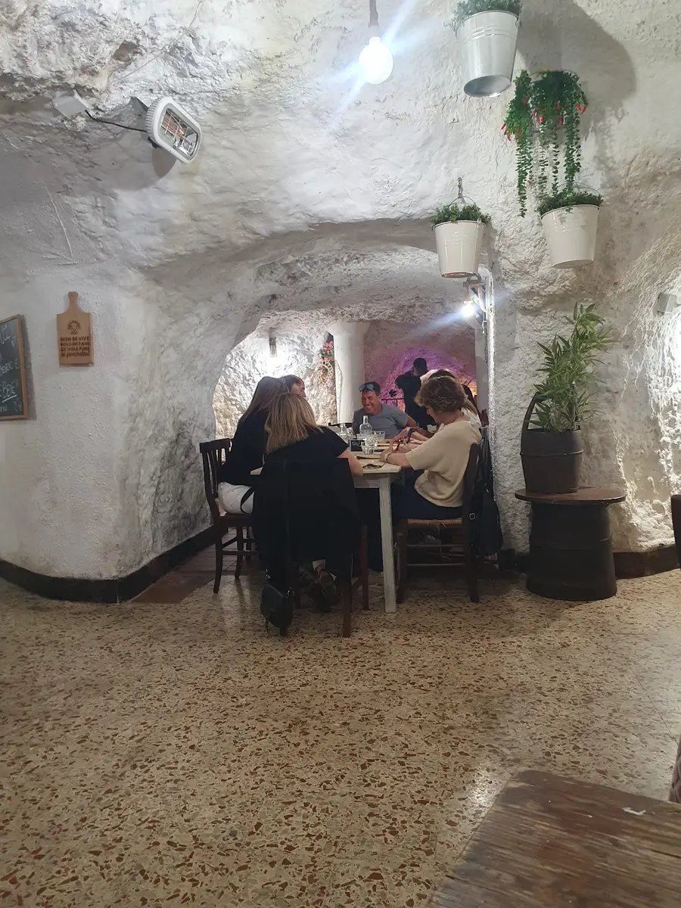
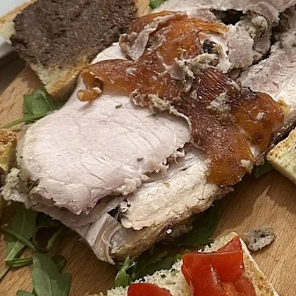
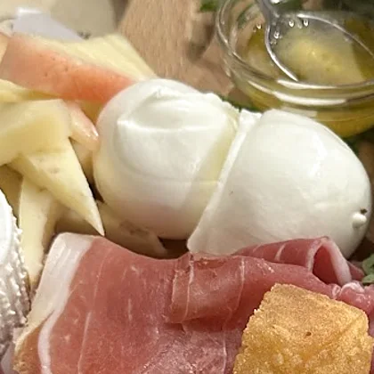
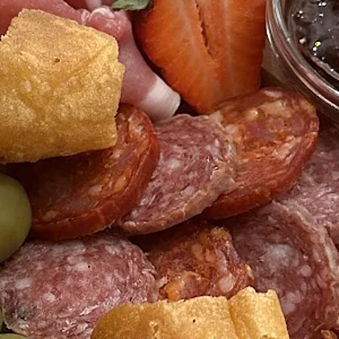
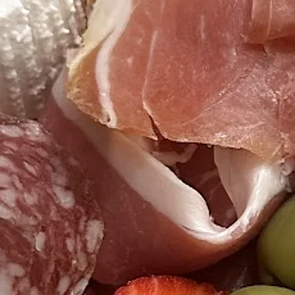
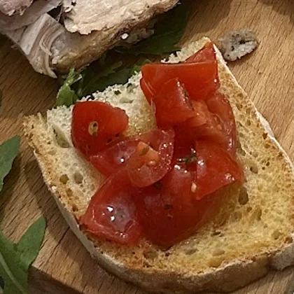
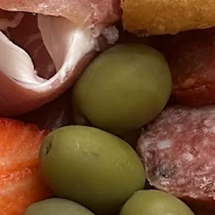
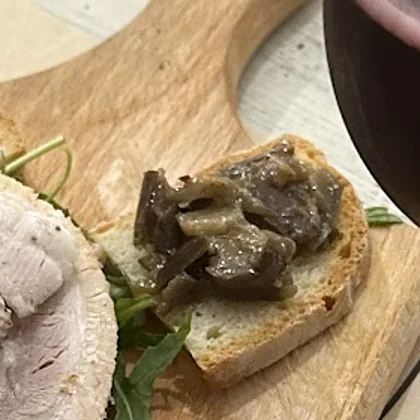
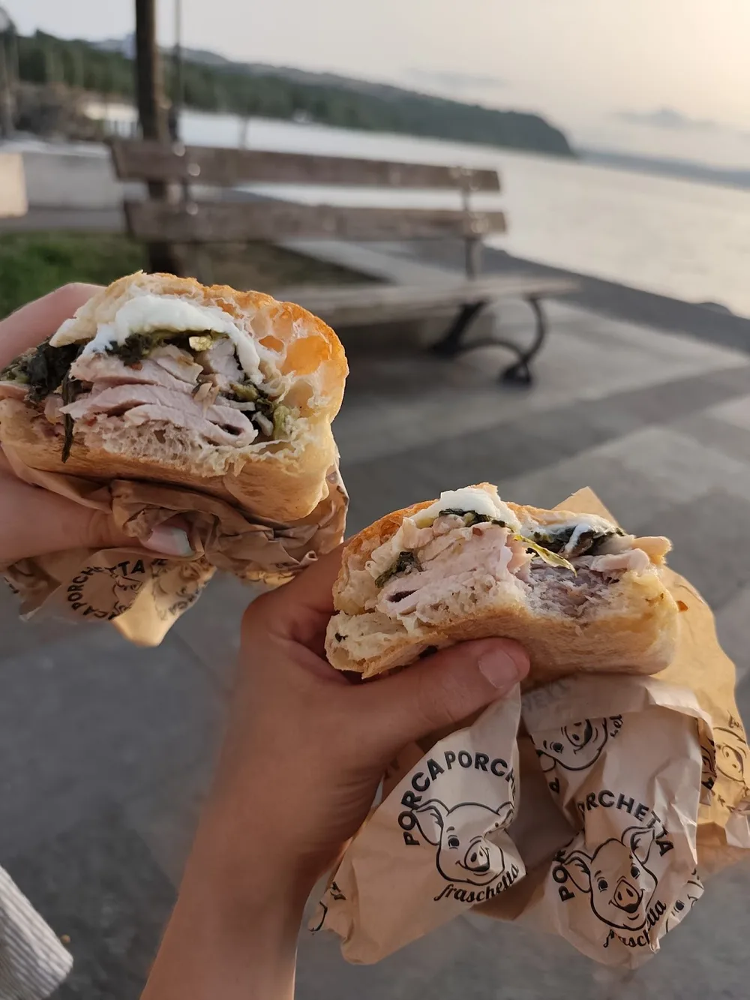
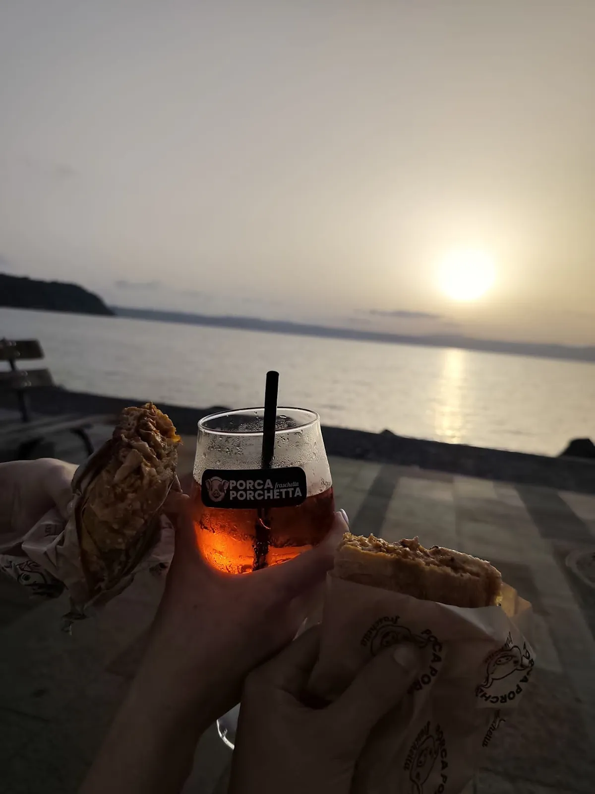

Via del Trivio 31 · centro storico
Se magna
dentro la grotta
Non è una scenografia: è tufo scavato sotto il centro storico di Anguillara. Volte bianche, muri di pietra, tavoli di legno, due neon e l’edera. Si entra per un panino e si esce tre ore dopo.
La fraschetta è quella cosa romana dove il tagliere arriva prima che tu abbia finito di ordinare, e il vino sta in caraffa perché nessuno qui ha tempo per i calici piccoli.
Quello che nun
strozza, ingrassa
- Tavoli dentro la roccia
- Cento metri dal lago
- Anche da portar via
La cosa per cui ci chiamano
I nostri
taglieri
Si riempie mentre scendi. Dal taglierino per due chiacchiere al tagliere apericena che sul menù, giustamente, sta scritto “esagerato”.







- Salumi affettati al momento
- Formaggi e mozzarella di bufala
- Porchetta, quella per cui siamo qui
- Bruschette, crostini e fritti caldi
Per due persone o per otto: si allunga il tagliere e si aggiunge una caraffa.
Menù e prezziCiavatta o ciavattone
Panini
zozzi
Due misure: la ciavatta per pranzo, il ciavattone quando hai fatto sul serio. Porchetta, salsiccia o trippa.

- Porchetta
- Salsiccia
- Trippa
Contorni da aggiungere
I panini possono essere farciti con qualsiasi contorno, formaggio e salume.
Aperitivi boni
Caraffe
di spritz
Si ordinano a litri, non a bicchieri. Tre, cinque o otto — poi vedi tu.
Birre, vino e dolci — fra cui il tiramisù di Martina — si chiedono in sala.
Menù e prezzi
Cento metri
E poi
c’è il lago
Il ciavattone si prende da portar via, si scende al lungolago e al tramonto ci pensa Bracciano. Lo spritz nel bicchiere di plastica non è un ripiego: è il piano.
Orari
e dove
- Lunedì
- Chiuso
- Martedì
- 17:00 – 23:00
- Mercoledì
- 17:00 – 23:00
- Giovedì
- 17:00 – 23:00
- Venerdì
- 17:00 – 23:00
- Sabato
- 11:30 – 14:30 · 17:00 – 23:00
- Domenica
- 11:30 – 14:30 · 17:00 – 23:00